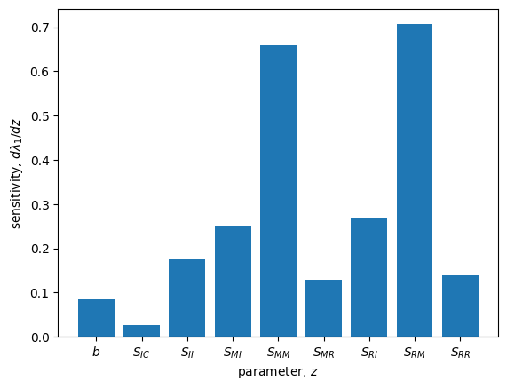

Lecture 10: Demography
Lecture overview
1. Demography
We're now going to use what we've learned about linear multivariate models to describe the dynamics of a population that is composed of different types of individuals. This area of research is called demography.
We'll just consider discrete-time linear models here and consider closed populations, so that the number of individuals of each type in the next timestep is
where \(\mathbf{M}\) describes the transitions from one type to another.
The general solution can be written in terms of the eigenvalues (\(\mathbf{D}\)) and eigenvectors (\(\mathbf{A}\)),
As the eigenvalues and eigenvectors are often unobtainable when there are many types of individuals (without specifying parameter values), we often rely on the long-term approximation,
Note
The long-term approximation, \(\vec{n}(t) = \lambda_1^t \vec{v}_1 \vec{u}_1 \vec{n}(0)\), is valid as long as the leading eigenvalue, \(\lambda_1\), is
- real (no cycles in long-term)
- positive (no oscillations to negative numbers!)
- larger than all other eigenvalues (so that we can ignore the other eigenvalues/vectors)
Fortunately we are guaranteed all these conditions in our demographic models since all entries of \(\mathbf{M}\) are non-negative and all entries of \(\mathbf{M}^t\) are positive for some value of \(t\). (This follows from something called the Perron-Frobenius Theorem.)
For this we just need to know the leading eigenvalue (\(\lambda_1\)) and the corresponding right (\(\vec{v}_1\)) and left (\(\vec{u}_1\)) eigenvectors, respectively. (Remember that we have scaled the eigenvectors such that \(\vec{u}_1\vec{v}_1=1\).)
These three components (\(\lambda_1\), \(\vec{v}_1\), \(\vec{u}_1\)) are the key demographic quantities that we will investigate:
- \(\lambda_1\) is the long-term population growth rate
- \(\vec{v}_1\) describes the stable stage-distribution
- \(\vec{u}_1\) describes the relative reproductive values of each stage
The most general demographic model is called stage-structure: we consider some finite number of discrete stages that an individual can be in and we use an abitrary matrix of transitions between stages (a projection matrix), \(\mathbf{M}\), to project how the population size and composition changes over time.
A common special case is age-structure: here we define the stages as the number of time steps an individual has been alive for, which leads to a simpler projection matrix (called a Leslie matrix) because individuals either transition to the next stage or die.
2. Stage-structure
Consider an arbitrary stage-structured population. The long term approximation for its dynamics is \(\vec{n}(t) \approx \lambda_1^t \vec{v}_1 \vec{u}_1 \vec{n}(0).\)
Question
If we wanted to increase the total population size in the future and we could add one individual to any stage, which stage should it be?
We want to know what entry of \(\vec{n}(0)\) to add one to to maximize \(\vec{n}(t) \approx \lambda^t \vec{v}_1 \vec{u}_1 \vec{n}(0)\). Adding individuals will not affect the long-term growth rate (\(\lambda_1\)) or the stable-stage distribution (\(\vec{v}_1\)). We can therefore only increase \(\vec{u}_1\vec{n}(0) = u_1 n_1(0) + u_2 n_2(0) + ... + u_m n_m(0)\). And so we add 1 to the stage with the largest reproductive value, \(u_i\).
Question
If we wanted to increase the long-term population growth rate and we could increase any parameter a little bit, which parameter should it be?
We want to know how increasing a given parameter of the model, \(z\), changes the long-term growth rate, \(\mathrm{d}\lambda_1/\mathrm{d}z\), which we call the sensitivity of \(\lambda_1\) to \(z\). Unfortunately \(\lambda_1\) is typically a relatively complicated expression, if attainable at all. Instead, we start with the definition of eigenvalues and eigenvectors to find
This helps because we only have to take the derivative of \(\mathbf{M}\). Unfortunately the righthand side is still going to be too complicated to understand in general but we can quickly evaluate the eigenvectors and the derivative of \(\mathbf{M}\) at some given parameter values.
Example: North Atlantic right whale
Let's consider an example. North Atlantic right whales were hunted to near extinction in the 1800s and early 1900s, after which their population size is thought to have slowly recovered (there are less than 400 now, and unfortunately appear to be in decline again). Because of their long life span, over which survival and reproductive rates vary enormously, a stage-structured model is very appropriate. Below we draw a flow diagram representing all the transitions between calves, sexually immature individuals, sexually mature individuals, and actively reproducing individuals.
graph LR;
C((Calves)) --sIC nC--> I((Immature));
I --sII nI--> I;
I --sMI nI--> M((Mature));
I --sRI nI--> R((Reproductive));
M --sMM nM--> M;
M --sRM nM--> R;
R --sRR nR--> R;
R --sMR nR--> M;
R --b nR--> C;Converting this flow diagram into a system of recursion equations, \(\vec{n}(t+1) = \mathbf{M}\vec{n}(t)\), the projection matrix is
If we now plug in some estimated parameter values from the literature (\(b=0.3\), \(s_{IC}=0.92\), \(s_{II}=0.86\), \(s_{MI}=0.08\), \(s_{MM}=0.8\), \(s_{MR}=0.88\), \(s_{RI}=0.02\), \(s_{RM}=0.19\), \(s_{RR}=0\)) we can numerically calculate the three key demographic quantities (see the code below),
These quantities tells us, for example, that in the long-run the population is predicted to grow (\(\lambda_1>1\)), the majority of individuals are expected to be mature (the second last entry in \(\vec{v}_1\) is the largest), and mature and reproductive individuals are expected to have much higher reproductive values than calves and immature individuals (the last two entries in \(\vec{u}_1\) are much larger than the first two).
Caveat
The parameter values above were estimated before the current population decline -- changes in climate and human behaviour, eg boat traffic and fishing, have presumably altered the parameter values, making the predictions less accurate. For example, the increased incidence of entanglement in fishing nets has likely decreased survival rates to the point that the population is now expected to decline. See here for more info.
Below we plot the general solution and long-term approximation. Note the quick convergence.
b,sic,sii,smi,smm,smr,sri,srm,srr = 0.3,0.92,0.86,0.08,0.8,0.88,0.02,0.19,0 #parameter values
import numpy as np
M = np.array([[0,0,0,b], #projection matrix
[sic,sii,0,0],
[0,smi,smm,smr],
[0,sri,srm,srr]])
# calculate
eigs = np.linalg.eig(M) #eigenvalues and right eigenvectors
ix = np.argmax(np.abs(eigs[0])) #which is leading eigenvalue
l1 = eigs[0][ix] #leading eigenvalue
v1 = eigs[1][:,ix] #leading right eigenvector
v1 = v1/np.sum(v1) #normalized to sum to 1
us = np.linalg.inv(eigs[1]) #left eigenvectors
u1 = us[ix] #leading left eigenvalue
u1 = u1/np.dot(u1,v1) #normalized so u1*v1=1
n0 = np.array([50,50,50,50]) #initial state
def ntfull(t):
'''full projection'''
return np.dot(np.linalg.matrix_power(M,t), n0)
def ntapp(t):
'''long term approximation'''
return l1**t * v1 * np.dot(u1, n0)
# plot
import matplotlib.pyplot as plt
fig, ax = plt.subplots()
labels = ['calves','immature','mature','reproductive']
colors = plt.get_cmap('tab10')
for i,j in enumerate(range(len(M))): #for each stage
ax.plot([ntfull(t)[j] for t in range(100)], color=colors(i), label=labels[i])
ax.plot([ntapp(t)[j] for t in range(100)], color=colors(i), linestyle='--') #long-term approx
ax.legend()
ax.set_xlabel('years')
ax.set_ylabel('number of whales')
plt.show()

Let's now return to our two questions.
Question
If we wanted to increase the total population size in the future and we could add one individual to any stage, which stage should it be?
The reproductive values for these whales are \(\vec{u}_1 \approx \begin{pmatrix} 0.69 & 0.76 & 1.07 & 1.15 \end{pmatrix}\). To maximize population size we should add an individual with the largest reproductive value: a reproductively active individual. This is perhaps not surprising since reproductively active individuals are the only individuals that produce offspring and if we introduced an individual in an earlier stage there is some chance that they would die before becoming reproductively active.
Question
If we wanted to increase the long-term population growth rate and we could increase any parameter a little bit, which parameter should it be?
Below we differentiate \(\mathbf{M}\) with respect to each parameter, \(\frac{\mathrm{d}\mathbf{M}}{\mathrm{d}z}\), and then numerically calculate the sensitivities, \(\frac{\vec{u}_1 \frac{\mathrm{d}\mathbf{M}}{\mathrm{d}z} \vec{v}_1}{\vec{u}_1 \vec{v}_1}\), at the current parameter estimates. We see that increasing the fraction of mature individuals that survive to become reproductively active, \(s_{RM}\), has the largest effect. This makes good sense because increasing \(s_{RM}\) increases the rate at which the most populous stage (from \(\vec{v}_1\)) transitions to the stage with the highest reproductive value (from \(\vec{u}_1\)).
import numpy as np
from sympy import *
import matplotlib.pyplot as plt
# differentiate M symbolically
b,sic,sii,smi,smm,smr,sri,srm,srr = symbols('b,s_ic,s_ii,s_mi,s_mm,s_mr,s_ri,s_rm,s_rr')
M = Matrix([[0,0,0,b], #projection matrix
[sic,sii,0,0],
[0,smi,smm,smr],
[0,sri,srm,srr]])
dMdzs = [diff(M,z) for z in [b,sic,sii,smi,smm,smr,sri,srm,srr]] #derivatives of M with respect to parameters
# numerically get eigenvectors
param_vals = {'b':0.3,'s_ic':0.92,'s_ii':0.86,'s_mi':0.08,'s_mm':0.8,'s_mr':0.88,'s_ri':0.02,'s_rm':0.19,'s_rr':0} #parameter values
numeric_M = np.array(M.subs(param_vals),dtype=float)
eigs = np.linalg.eig(numeric_M) #eigenvalues and right eigenvectors
ix = np.argmax(np.abs(eigs[0])) #which is leading eigenvalue
v1 = eigs[1][:,ix] #leading right eigenvector
v1 = v1/np.sum(v1) #normalized to sum to 1
us = np.linalg.inv(eigs[1]) #left eigenvectors
u1 = us[ix] #leading left eigenvalue
u1 = u1/np.dot(u1,v1) #normalized so u1*v1=1
# change in leading eigenvalue with increase in each parameter
dl1dzs = [np.matmul(np.matmul(u1,dMdz),v1)/np.matmul(u1,v1) for dMdz in dMdzs]
# plot
plt.bar(['$b$','$S_{IC}$','$S_{II}$','$S_{MI}$','$S_{MM}$','$S_{MR}$','$S_{RI}$','$S_{RM}$','$S_{RR}$'],dl1dzs)
plt.xlabel('parameter, $z$')
plt.ylabel('sensitivity, $d\lambda_1/dz$')
plt.show()

3. Age-structure
Now let's look at the special case of age-structure. Here individuals in stage \(i\) at time \(t\) can only contribute to stage \(i+1\) (survival) and stage \(1\) (reproduction) at time \(t+1\).
graph LR;
1((1)) --p1 n1--> 2((2));
1 --m1 n1--> 1;
2 --p2 n2--> 3((3));
2 --m2 n2--> 1;
3 --p3 n3--> 4((4));
3 --m3 n3--> 1;
4 --m4 n4--> 1;Because of this, the projection matrix is simpler in the sense that it contains more zeros and has non-zero entries in very specific places,
We call this a Leslie matrix and often denote it with \(\mathbf{L}\). The first row contains the fecundities of each age group, \(m_i\), while the entries immediately below the diagonal give the fraction of individuals that survive each age group, \(p_i\).
Because of the structure of the Leslie matrix, many expressions are now simpler. For example, the characteristic polynomial, \(\mathrm{Det}(\mathbf{L}-\mathbf{I}\lambda)=0\), which we use to get the eigenvalues, can be calculated using the first row. After rearranging we get what is known as the Euler-Lotka equation,
where \(l_1 = 1\), \(l_i = p_1 p_2 \cdots p_{i-1}\) is the fraction of individuals that survive from birth to age \(i\) and \(d\) is the number of ages (ie, \(\mathbf{L}\) is a \(d\times d\) matrix). Given the \(l_i\) and \(m_i\) we can use this equation to find the long-term population growth rate, \(\lambda_1\).
Example: stickleback
For example, let's look at a model of stickleback, a small fish. We assume stickleback do not live more than 4 years and estimate the Leslie matrix as
The Euler-Lotka equation is then
This can be numerically solved to give our four eigenvalues: \(\lambda\approx2.75, -0.3 \pm 0.3i, -0.14\). The long-term growth rate is the eigenvalue with the largest absolute value, \(\lambda_1=2.75\).
Below we plot the general solution and long-term approximation. As expected based on \(\lambda_1=2.75\), the population grows very quickly (note the log scale on the y-axis).
m1,m2,m3,m4,p1,p2,p3 = 2,3,4,4,0.6,0.3,0.1 #parameter values
import numpy as np
M = np.array([[m1,m2,m3,m4], #projection matrix
[p1,0,0,0],
[0,p2,0,0],
[0,0,p3,0]])
# calculate
eigs = np.linalg.eig(M) #eigenvalues and right eigenvectors
ix = np.argmax(np.abs(eigs[0])) #which is leading eigenvalue
l1 = eigs[0][ix] #leading eigenvalue
v1 = eigs[1][:,ix] #leading right eigenvector
v1 = v1/np.sum(v1) #normalized to sum to 1
us = np.linalg.inv(eigs[1]) #left eigenvectors
u1 = us[ix] #leading left eigenvalue
u1 = u1/np.dot(u1,v1) #normalized so u1*v1=1
n0 = np.array([25,25,25,25]) #initial state
def ntfull(t):
'''full projection'''
return np.dot(np.linalg.matrix_power(M,t), n0)
def ntapp(t):
'''long term approximation'''
return l1**t * v1 * np.dot(u1, n0)
# plot
import matplotlib.pyplot as plt
fig, ax = plt.subplots()
labels = ['age 1','age 2','age 3','age 4']
colors = plt.get_cmap('tab10')
for i,j in enumerate(range(len(M))): #for each stage
ax.plot([ntfull(t)[j] for t in range(10)], color=colors(i), label=labels[i])
ax.plot([ntapp(t)[j] for t in range(10)], color=colors(i), linestyle='--') #long-term approx
ax.legend()
ax.set_xlabel('years')
ax.set_ylabel('number of stickleback')
ax.set_yscale('log')
plt.show()
/Users/mmosmond/.virtualenvs/eeb430/lib/python3.7/site-packages/matplotlib/cbook/__init__.py:1298: ComplexWarning: Casting complex values to real discards the imaginary part
return np.asarray(x, float)

4. Summary
- linear multivariate models can describe the demography of a population composed of multiple types of individuals (stages or ages)
- in this case the terms in the long-term approximation are
- \(\lambda_1\): long-term population growth rate
- \(\vec{v}_1\): the stable stage-distribution
- \(\vec{u}_1\): the relative reproductive values of each (st)age
- adding individuals with larger reproductive value increases future population size more
- the effect of each parameter on the long-term growth rate (its sensitivity) can be calculated as \(\frac{\mathrm{d}\lambda_1}{\mathrm{d}z} = \frac{\vec{u}_1 \frac{\mathrm{d}\mathbf{M}}{\mathrm{d}z} \vec{v}_1}{\vec{u}_1 \vec{v}_1}\)
- with age-structure the projection matrix \(\mathbf{M}\) takes a special form (Leslie matrix) allowing the eigenvalues to be found with the Euler-Lotka equation, \(1 = \sum_{i=1}^{d} \frac{l_i m_i}{\lambda^i}\)